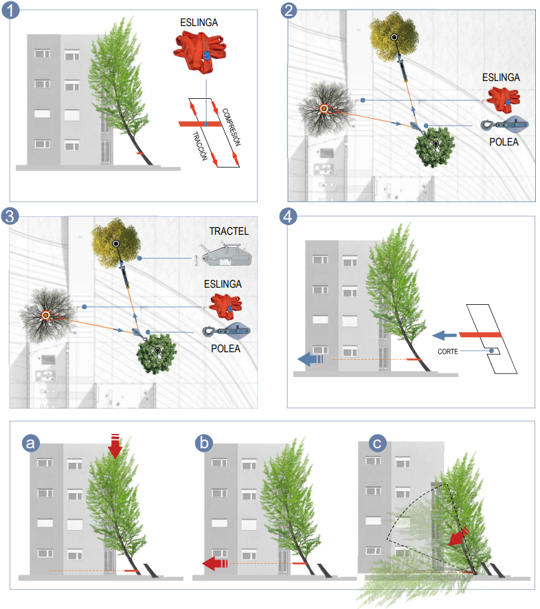
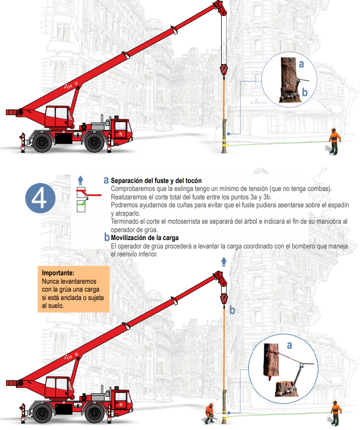

Técnicas de Corte y Derribo de Árboles
Métodos de corte, técnicas de tala, cálculos y uso de elementos auxiliares
⚡ Tensiones en la Madera
Consideraciones sobre tensiones
En cortes de ramas o troncos dañados, el espadín puede quedar atrapado por las tensiones a las que está sometida la madera. Estas tensiones se generan en función de los apoyos y el propio peso.
En cortes de ramas o troncos dañados, el espadín puede quedar atrapado por las tensiones a las que está sometida la madera. Estas tensiones se generan en función de los apoyos y el propio peso.
Tensión de Tracción
Esfuerzo al que está sometido un cuerpo al aplicarle dos fuerzas en sentido opuesto que tienden a estirarlo. En zonas de tracción, las fibras de la madera tienden a separarse del espadín al cortar.
Tensión de Compresión
Esfuerzo al que está sometido un cuerpo por la aplicación de fuerzas en sentido opuesto que tienden a acortarlo. En zonas de compresión, la madera tiende a cerrarse y atrapar el espadín.
Técnica general de trabajo
Siempre que sea posible, trabajaremos con la parte inferior del espadín. De esta manera el cuerpo de la máquina tenderá a acercarse al tronco, haciendo el trabajo menos fatigoso y más seguro.
Siempre que sea posible, trabajaremos con la parte inferior del espadín. De esta manera el cuerpo de la máquina tenderá a acercarse al tronco, haciendo el trabajo menos fatigoso y más seguro.
Tronco Apoyado sobre sus Dos Extremos
Las fibras superiores están en compresión y las inferiores en tracción. Si cortamos por la parte superior, el tronco atrapará el espadín.
🔧
Procedimiento
1. Pequeño corte en parte superior (corte de descarga)
2. Corte ascendente desde la parte inferior
3. Hacer coincidir con corte superior de descarga
2. Corte ascendente desde la parte inferior
3. Hacer coincidir con corte superior de descarga
Tronco Apoyado sobre un Extremo
Las fibras superiores están en tracción y las inferiores en compresión. Si cortamos por la parte inferior, el tronco atrapará el espadín.
🔧
Procedimiento
1. Pequeño corte en parte inferior (corte de descarga)
2. Corte descendente desde la parte superior
3. Hacer coincidir con corte inferior de descarga
2. Corte descendente desde la parte superior
3. Hacer coincidir con corte inferior de descarga
Troncos con Tensiones Laterales
Tensiones de compresión y tracción generadas por la posición forzada de una rama. Se transfieren fuerzas horizontales laterales, no verticales.
🔧
Procedimiento
1. Colocarse en zona de compresión
2. Corte de descarga en zona de compresión
3. Corte desde zona de tracción hasta coincidir con corte de descarga
2. Corte de descarga en zona de compresión
3. Corte desde zona de tracción hasta coincidir con corte de descarga
Atrapamiento del Espadín
Si el espadín queda atrapado en el corte: apagar la máquina con freno de cadena desactivado, intentar sacarlo sin tirones violentos. Si no sale, abrir el corte con cuñas o palanquetas, evitando movimientos que dañen la máquina.
Si el espadín queda atrapado en el corte: apagar la máquina con freno de cadena desactivado, intentar sacarlo sin tirones violentos. Si no sale, abrir el corte con cuñas o palanquetas, evitando movimientos que dañen la máquina.
🌳 Técnicas de Trabajo desde el Suelo
Tala o Apeo de un Árbol
Tras reconocer los daños y determinar la tala, elegir el lugar de derribo. Asegurar la zona evitando el paso de personas. Valorar entorno urbano, obstáculos y condiciones climatológicas (no talar con viento excesivo).
Tras reconocer los daños y determinar la tala, elegir el lugar de derribo. Asegurar la zona evitando el paso de personas. Valorar entorno urbano, obstáculos y condiciones climatológicas (no talar con viento excesivo).
Preparación del Árbol
• Determinar dirección de caída aprovechando caída natural
• Valorar forma de copa, longitud de tronco, inclinación del terreno
• Comprobar obstáculos en zona de caída (tendidos, casas, vehículos)
• Elegir vía de escape en dirección opuesta a la caída
• Despejar ramas e irregularidades del tronco hasta altura de hombros
• Valorar forma de copa, longitud de tronco, inclinación del terreno
• Comprobar obstáculos en zona de caída (tendidos, casas, vehículos)
• Elegir vía de escape en dirección opuesta a la caída
• Despejar ramas e irregularidades del tronco hasta altura de hombros
Precauciones durante la Tala
• No terminar corte de tala con motosierra
• Una vez realizados cortes de debilitamiento, derribar con cuñas, barras, cables o cuerdas
• Cuando el árbol comience a caer, caminar hacia atrás por vía de escape lateral mirando la copa
• Las vías de escape serán laterales traseras a 45 grados opuestas a la dirección de caída del árbol
• En terreno irregular, cuidado con rebote al caer
• Una vez realizados cortes de debilitamiento, derribar con cuñas, barras, cables o cuerdas
• Cuando el árbol comience a caer, caminar hacia atrás por vía de escape lateral mirando la copa
• Las vías de escape serán laterales traseras a 45 grados opuestas a la dirección de caída del árbol
• En terreno irregular, cuidado con rebote al caer
Tipos de Corte de Tala
Según necesidades del árbol (diámetro del tronco o caída natural) y longitud del espadín, elegir técnica más apropiada.
Según necesidades del árbol (diámetro del tronco o caída natural) y longitud del espadín, elegir técnica más apropiada.
Corte de Dirección
Realiza función similar a bisagras de puerta; determina hacia dónde caerá el árbol.
🔧
Procedimiento
• Corte horizontal en parte inferior
• Corte oblicuo descendente en parte superior a 45 grados
• Ambos cortes deben encontrarse
• No sobrepasar 1/4 del diámetro del tronco (sin corteza)
• Corte oblicuo descendente en parte superior a 45 grados
• Ambos cortes deben encontrarse
• No sobrepasar 1/4 del diámetro del tronco (sin corteza)
Corte de Tala
Determina velocidad de caída y permite corregir dirección.
🔧
Procedimiento
• Corte horizontal en parte opuesta al corte de dirección
• Ligeramente por encima de su vértice
• No debe separar completamente el árbol
• Dejar listón de madera (charnela) de aproximadamente 10% del diámetro
• Ligeramente por encima de su vértice
• No debe separar completamente el árbol
• Dejar listón de madera (charnela) de aproximadamente 10% del diámetro
Técnica de Corte en Abanico
Se aplica cuando el diámetro del árbol es aproximadamente el doble que el espadín.
🔧
Procedimiento
1. Realizar corte de dirección
2. Introducir punta del espadín lateralmente respetando charnela
3. Con punta en centro del tronco, girar hacia parte opuesta del corte de dirección
4. Usar cuñas para ganar grado de desplome y evitar cierre del corte
2. Introducir punta del espadín lateralmente respetando charnela
3. Con punta en centro del tronco, girar hacia parte opuesta del corte de dirección
4. Usar cuñas para ganar grado de desplome y evitar cierre del corte
Técnica de Pinchazo de Corazón
Se aplica cuando el diámetro del tronco es mayor que el doble de la longitud del espadín.
🔧
Procedimiento
1. Realizar corte direccional dando más ángulo al oblicuo
2. Introducir punta del espadín 2-3 cm por encima del vértice del corte direccional
3. Llegar al centro del tronco
4. Movimiento pivotante de izquierda a derecha para abrir hueco
5. Posicionar corte de abanico respetando charnela
2. Introducir punta del espadín 2-3 cm por encima del vértice del corte direccional
3. Llegar al centro del tronco
4. Movimiento pivotante de izquierda a derecha para abrir hueco
5. Posicionar corte de abanico respetando charnela
📊 Cálculos para el Derribo
Cálculo de Altura - Método con Elementos de Fortuna
Método práctico para medir altura cuando no se dispone de medidor láser.
🔧
Procedimiento
1. Conseguir una rama pequeña y recta (A)
2. Colocar verticalmente frente a nosotros estirando el brazo
3. Hacer coincidir visualmente:
- Extremo inferior de la vara con base del árbol
- Parte superior de la vara con copa del árbol
4. Girar la mano a posición horizontal sin mover la vara (B)
5. Marcar el punto donde "cae" la longitud (C)
6. Medir distancia entre la señal y base del árbol (D)
2. Colocar verticalmente frente a nosotros estirando el brazo
3. Hacer coincidir visualmente:
- Extremo inferior de la vara con base del árbol
- Parte superior de la vara con copa del árbol
4. Girar la mano a posición horizontal sin mover la vara (B)
5. Marcar el punto donde "cae" la longitud (C)
6. Medir distancia entre la señal y base del árbol (D)

Altura del árbol = Distancia desde base hasta punto marcado
Explicación del método:
Este método utiliza principios de geometría básica y triángulos semejantes. La distancia desde el punto marcado hasta la base del árbol corresponde exactamente a la altura del mismo.
Este método utiliza principios de geometría básica y triángulos semejantes. La distancia desde el punto marcado hasta la base del árbol corresponde exactamente a la altura del mismo.
Cálculo del Radio
Para medir el radio de forma precisa podemos calcularlo de dos formas diferentes.
Para medir el radio de forma precisa podemos calcularlo de dos formas diferentes.
Método 1: Por Perímetro
Medir con flexómetro el perímetro del tronco a altura de pecho (1.3 m del suelo)
radio = perímetro / (2 × π)
Método 2: Por Diámetro
Medir diámetro aproximado con flexómetro (menos preciso pero más rápido)
radio = diámetro / 2
Cálculo del Volumen
Una vez calculada la altura del árbol (h) y el radio del tronco (r), podemos calcular el volumen (V).
Una vez calculada la altura del árbol (h) y el radio del tronco (r), podemos calcular el volumen (V).
Fórmula del Volumen
V = π × r² × h
Cálculo Aproximado de la Masa
La densidad es la relación entre masa y volumen. La madera verde recién cortada tiene alrededor de 50% de humedad.
La densidad es la relación entre masa y volumen. La madera verde recién cortada tiene alrededor de 50% de humedad.
Fórmula de la Masa
masa = densidad × volumen
Densidades aproximadas:
• Coníferas (ligeras): 400-550 kg/m³
• Encina y roble (pesadas): 800 kg/m³
• Coníferas (ligeras): 400-550 kg/m³
• Encina y roble (pesadas): 800 kg/m³
NOTA IMPORTANTE
Para estimar la masa con margen de error suficiente, cada m³ de madera se multiplica por 800 kg (como si fuera encina o roble), ya que el trabajo se realiza con árboles vivos recién dañados y con cierto nivel de humedad (alrededor de un 50%).
Para estimar la masa con margen de error suficiente, cada m³ de madera se multiplica por 800 kg (como si fuera encina o roble), ya que el trabajo se realiza con árboles vivos recién dañados y con cierto nivel de humedad (alrededor de un 50%).
🏗️ Derribo con Elementos Auxiliares
Situaciones que requieren elementos auxiliares
Generalmente en árboles dañados tras ventanales, tormentas o temporales. Ramas o troncos rotos, colgados, apoyados, desgajados o desplomados en zonas urbanas que suponen riesgo para ciudadanos, vehículos, locales, etc.
Generalmente en árboles dañados tras ventanales, tormentas o temporales. Ramas o troncos rotos, colgados, apoyados, desgajados o desplomados en zonas urbanas que suponen riesgo para ciudadanos, vehículos, locales, etc.
Cuándo usar medios auxiliares
• Para talar árbol en dirección opuesta a su caída natural
• Cuando el corte de dirección no es suficiente para cambiar la caída natural
• En árboles inestables con tensiones difíciles de identificar
• Para talar árbol en dirección opuesta a su caída natural
• Cuando el corte de dirección no es suficiente para cambiar la caída natural
• En árboles inestables con tensiones difíciles de identificar
Consideraciones generales
• Siempre que el árbol esté inestable, intentar talar con medios mecánicos desde lugar seguro
• Trabajar desde escala aérea teniendo posición elevada y más segura (precaución con efecto muelle)
• Aliviar tensión suspendiendo parcialmente la carga con ayuda de grúa, vehículo, etc.
• Realizar cortes de forma lenta, progresiva y observando movimientos de la estructura
• Siempre que el árbol esté inestable, intentar talar con medios mecánicos desde lugar seguro
• Trabajar desde escala aérea teniendo posición elevada y más segura (precaución con efecto muelle)
• Aliviar tensión suspendiendo parcialmente la carga con ayuda de grúa, vehículo, etc.
• Realizar cortes de forma lenta, progresiva y observando movimientos de la estructura
Material que utilizaremos
Diversos elementos auxiliares para el derribo controlado de árboles.
Diversos elementos auxiliares para el derribo controlado de árboles.
Tractel
Aparato portátil de fuerza manual para tracción y elevación con cable pasante
Cabrestante
Dispositivo de gran potencia diseñado para mover carga sobre una superficie horizontal.
Grúa de gran tonelaje
Camión con aguilón (brazo de grúa) para levantar pesos y desplazarlos.
Situaciones Complejas Más Comunes
Las situaciones más habituales a las que nos enfrentamos en intervenciones:
Las situaciones más habituales a las que nos enfrentamos en intervenciones:
Árbol apoyado en fachada
Árbol desarraigado
Árbol excesivamente desplomado por el viento
Árbol apoyado en otro árbol
Árbol partido a la mitad de su fuste y apoyado
Gran rama de árbol partida
Preparación y Evaluación
Tras el reconocimiento previo y determinar la necesidad del derribo:
Tras el reconocimiento previo y determinar la necesidad del derribo:
🔒
Procedimiento de Preparación
• Asegurar la zona mediante cordón de seguridad
• Aislar el peligro
• Revaluar la situación completa:
- Edificios y vehículos cercanos
- Forma de la copa e inclinación del árbol
- Salud del árbol
- Velocidad y dirección del viento
• Aislar el peligro
• Revaluar la situación completa:
- Edificios y vehículos cercanos
- Forma de la copa e inclinación del árbol
- Salud del árbol
- Velocidad y dirección del viento
Dasometría para Estimación de Peso
Antes de usar medios auxiliares debemos estimar el peso observando altura y diámetro. La dasometría estudia los bosques y aplica métodos estadísticos para su manejo.
Antes de usar medios auxiliares debemos estimar el peso observando altura y diámetro. La dasometría estudia los bosques y aplica métodos estadísticos para su manejo.
Dendrometría
Trata de la medida de las dimensiones del árbol como "ente individual", estudio de su forma y determinación de su volumen.
Estereometría
Trata de la masa forestal. Realiza estimaciones métricas y cálculo del volumen (cubicación) de la masa forestal como conjunto de árboles.
IMPORTANTE: Cálculo del Volumen Completo
Los expertos usan fórmulas complejas (Huber, Smalian, Hohenadl) pero solo calculan el fuste. En nuestro caso necesitamos el volumen completo incluyendo ramas y hojas, ya que son una parte muy pesada del árbol y crucial para elevarlo o moverlo con medios mecánicos.
Los expertos usan fórmulas complejas (Huber, Smalian, Hohenadl) pero solo calculan el fuste. En nuestro caso necesitamos el volumen completo incluyendo ramas y hojas, ya que son una parte muy pesada del árbol y crucial para elevarlo o moverlo con medios mecánicos.
Árbol Desplomado en Fachada
Situación común en nuestro trabajo. Distinguimos dos tipos: cuando las raíces aún están arraigadas parcialmente al terreno, y cuando el tronco ha partido y está libre.
Situación común en nuestro trabajo. Distinguimos dos tipos: cuando las raíces aún están arraigadas parcialmente al terreno, y cuando el tronco ha partido y está libre.
🔧
Procedimiento para Árbol en Fachada
1. En centro del fuste, colocar eslinga o cadena para tirar hacia abajo con cabrestante
2. Redirigir dirección de tiro con ayuda de polea
3. Dar tensión al conjunto y realizar corte en parte inferior del tronco para debilitar madera
4. Una vez debilitada la madera, bombero se retira de zona
a. Accionar cabrestante hasta partir tronco. Queda liberado del tocón en posición de mayor equilibrio
b. Peso reducido de forma considerable
c. Separar árbol de fachada arrastrando, volteando, traccionando de copa o elevando con grúa
2. Redirigir dirección de tiro con ayuda de polea
3. Dar tensión al conjunto y realizar corte en parte inferior del tronco para debilitar madera
4. Una vez debilitada la madera, bombero se retira de zona
a. Accionar cabrestante hasta partir tronco. Queda liberado del tocón en posición de mayor equilibrio
b. Peso reducido de forma considerable
c. Separar árbol de fachada arrastrando, volteando, traccionando de copa o elevando con grúa

Talado con Apoyo de Grúa
Los trabajos con grúa permiten dominar árboles de forma controlada en lugares reducidos donde no es posible realizar una tala común, como calles estrechas o con presencia de otros árboles cercanos.
Los trabajos con grúa permiten dominar árboles de forma controlada en lugares reducidos donde no es posible realizar una tala común, como calles estrechas o con presencia de otros árboles cercanos.
Preparación y Consideraciones
• Asegurar el árbol a izar antes del corte de separación
• Considerar vertical de la pluma respecto a inclinación del árbol
• Estimar peso de la carga antes de la maniobra
• Verificar que no hay personas en zona de trabajo
• Todos los movimientos deben estar en campo visual del operador
• Considerar vertical de la pluma respecto a inclinación del árbol
• Estimar peso de la carga antes de la maniobra
• Verificar que no hay personas en zona de trabajo
• Todos los movimientos deben estar en campo visual del operador
Procedimiento de Izado
• Levantar cargas verticalmente por encima de su centro de gravedad
• Colocar eslinga en vertical y por encima del centro de gravedad
• Realizar corte total del fuste
• Ayudarse con cuñas para evitar que fuste asiente sobre espadín
• Colocar eslinga en vertical y por encima del centro de gravedad
• Realizar corte total del fuste
• Ayudarse con cuñas para evitar que fuste asiente sobre espadín
🔧
Procedimiento Detallado con Grúa
Tramo Superior:
• Colocar eslinga que sujetará y permitirá manipular la carga
• Atado en vertical y por encima del centro de gravedad
Tramo Inferior:
• Colocar tiro (1,20 a 1,50 m de la base) por encima del corte de tala
• Reenvío situado debajo del corte de tala
• Usar eslabón y eslinga para el reenvío
• Evitar desplazamiento de carga al separarse fuste y tocón
Separación del Fuste:
• Verificar que la eslinga tenga mínima tensión (sin combas)
• Realizar corte total del fuste
• Motoserrista se separa e indica fin de maniobra al operador
Movilización:
• Operador levanta carga coordinado con bombero del reenvío inferior
• Depositar en suelo para desramado y tronzado
• Colocar eslinga que sujetará y permitirá manipular la carga
• Atado en vertical y por encima del centro de gravedad
Tramo Inferior:
• Colocar tiro (1,20 a 1,50 m de la base) por encima del corte de tala
• Reenvío situado debajo del corte de tala
• Usar eslabón y eslinga para el reenvío
• Evitar desplazamiento de carga al separarse fuste y tocón
Separación del Fuste:
• Verificar que la eslinga tenga mínima tensión (sin combas)
• Realizar corte total del fuste
• Motoserrista se separa e indica fin de maniobra al operador
Movilización:
• Operador levanta carga coordinado con bombero del reenvío inferior
• Depositar en suelo para desramado y tronzado

ADVERTENCIAS DE SEGURIDAD CON GRÚA
• NUNCA levantar con grúa carga que no esté totalmente libre
• El corte debe estar COMPLETAMENTE realizado antes de izar
• No derribar árbol hacia zona donde haya otro en que se pueda apoyar o enredar
• No talar árbol sobre el que ya hay otro árbol apoyado
• Nunca trabajar en zona de peligro correspondiente a árbol apoyado
• Verificar asentamiento de estabilizadores en terreno firme
• NUNCA levantar con grúa carga que no esté totalmente libre
• El corte debe estar COMPLETAMENTE realizado antes de izar
• No derribar árbol hacia zona donde haya otro en que se pueda apoyar o enredar
• No talar árbol sobre el que ya hay otro árbol apoyado
• Nunca trabajar en zona de peligro correspondiente a árbol apoyado
• Verificar asentamiento de estabilizadores en terreno firme
¿Por Qué Ocurren los Accidentes con Grúas?
• No traccionar carga verticalmente por encima de su centro de gravedad
• Exceder capacidades de carga de la grúa
• Mal asiento de apoyos y estabilizadores
• Terreno no nivelado o de firme blando
• Falta de comunicación con operador ante carga distante y no visible
• No traccionar carga verticalmente por encima de su centro de gravedad
• Exceder capacidades de carga de la grúa
• Mal asiento de apoyos y estabilizadores
• Terreno no nivelado o de firme blando
• Falta de comunicación con operador ante carga distante y no visible
🌿 Desrame de un Árbol
Riesgos durante el desrame
En las operaciones de desrame se ubica la mayor concentración de accidentes. Las ramas dificultan nuestros movimientos y visibilidad durante los trabajos con la motosierra.
En las operaciones de desrame se ubica la mayor concentración de accidentes. Las ramas dificultan nuestros movimientos y visibilidad durante los trabajos con la motosierra.
PRECAUCIONES IMPORTANTES
• Complicada observación de apoyos y valoración de tensiones
• Posibilidad de corte con punta del espadín y sufrir retroceso violento
• Difíciles posturas de trabajo que acercan el espadín al cuerpo
• Descoordinación por ruido de motosierra y falta de comunicación
• Complicada observación de apoyos y valoración de tensiones
• Posibilidad de corte con punta del espadín y sufrir retroceso violento
• Difíciles posturas de trabajo que acercan el espadín al cuerpo
• Descoordinación por ruido de motosierra y falta de comunicación
Preparación del Área
• Despejar zona de corte para mejorar visibilidad
• Identificar apoyos y tensiones antes de empezar
• Trabajar de forma tranquila, segura y coordinada
• Identificar apoyos y tensiones antes de empezar
• Trabajar de forma tranquila, segura y coordinada
Técnicas de Seguridad
• Trabajar con motosierra cerca del cuerpo
• Avanzar en zig zag de base a copa cortando ramas que no apoyan
• Progresar dejando la carcasa sobre el tronco para liberar peso
• Colocar tronco a nuestra derecha como protección
• Avanzar en zig zag de base a copa cortando ramas que no apoyan
• Progresar dejando la carcasa sobre el tronco para liberar peso
• Colocar tronco a nuestra derecha como protección
Procedimiento para Ramas Grandes
Las ramas grandes se cortan en etapas (se tercian), empezando desde el extremo más alejado y avanzando hacia el tronco.
Las ramas grandes se cortan en etapas (se tercian), empezando desde el extremo más alejado y avanzando hacia el tronco.
🔧
Posiciones Prohibidas
• NO desramar con tronco entre las piernas
• NO estar sobre la rama durante el corte
• NO colocarse en horquilla de dos ramas
• Verificar que árbol está suelto de base
• Altura de corte no debe superar los hombros
• NO estar sobre la rama durante el corte
• NO colocarse en horquilla de dos ramas
• Verificar que árbol está suelto de base
• Altura de corte no debe superar los hombros
Movimientos y Posiciones
Al desplazarnos a otra posición: activar freno de cadena y descansar máquina en el tronco. Buscar posición que dure todo el corte.
Al desplazarnos a otra posición: activar freno de cadena y descansar máquina en el tronco. Buscar posición que dure todo el corte.
🪵 Tronzado de un Árbol
Proceso de Tronzado
Consiste en trocear el tronco en partes más pequeñas cuyo tamaño y peso puedan ser movilizados con relativa facilidad.
Consiste en trocear el tronco en partes más pequeñas cuyo tamaño y peso puedan ser movilizados con relativa facilidad.
🔧
Dirección de Corte
• Iniciar desde la parte donde se encontraba la copa (más delgada)
• Avanzar hacia la base (más gruesa)
• Cortes transversales a las fibras
• Avanzar hacia la base (más gruesa)
• Cortes transversales a las fibras
Recomendaciones Previas
Antes de empezar los cortes, reconocer bien cómo está apoyado el tronco e identificar las tensiones para evitar que se quede atrapado el espadín.
Antes de empezar los cortes, reconocer bien cómo está apoyado el tronco e identificar las tensiones para evitar que se quede atrapado el espadín.
Tronzado en Pendiente
Situarse en la parte superior del tronco, donde no se puede ser alcanzado por el tronco en caso de que ruede.
Tronzado con Tensiones
Procedimiento para cortar troncos con tensiones latentes:
🔧
Procedimiento
1. Colocarse en lado de tensiones de compresión
2. Pequeño corte de descarga para romper fibras
3. Cambiar posición al lado opuesto
4. Corte final en lado de tensiones de tracción
2. Pequeño corte de descarga para romper fibras
3. Cambiar posición al lado opuesto
4. Corte final en lado de tensiones de tracción